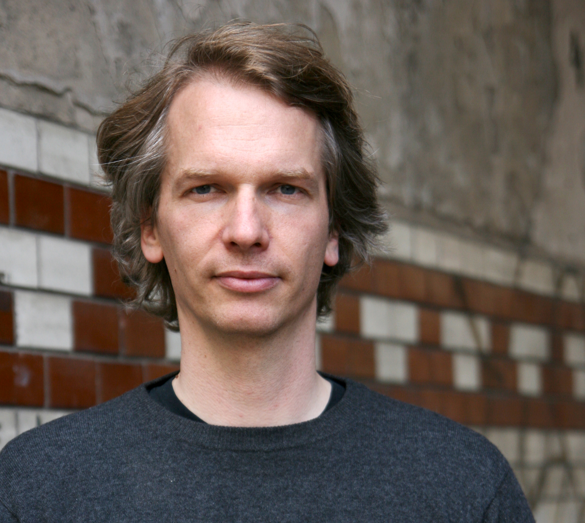
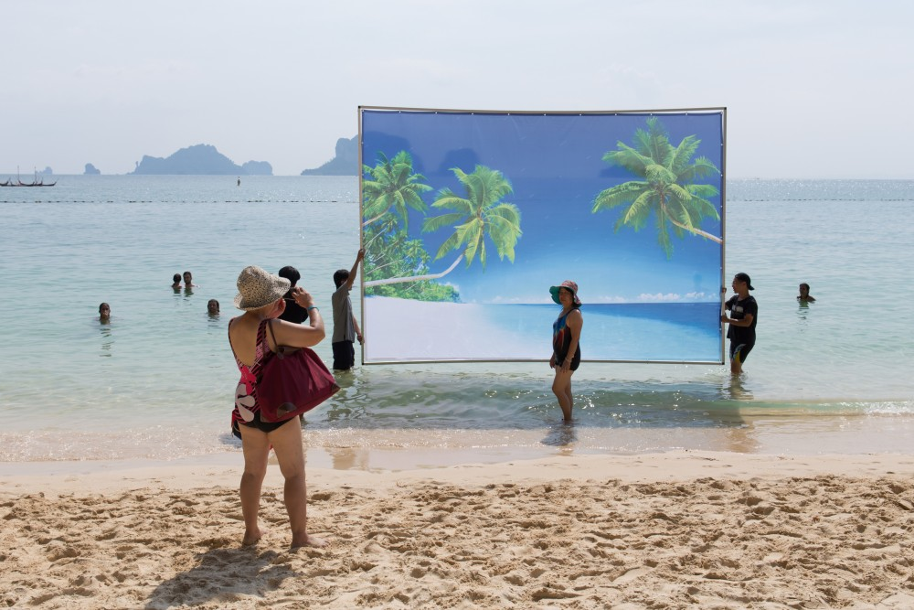
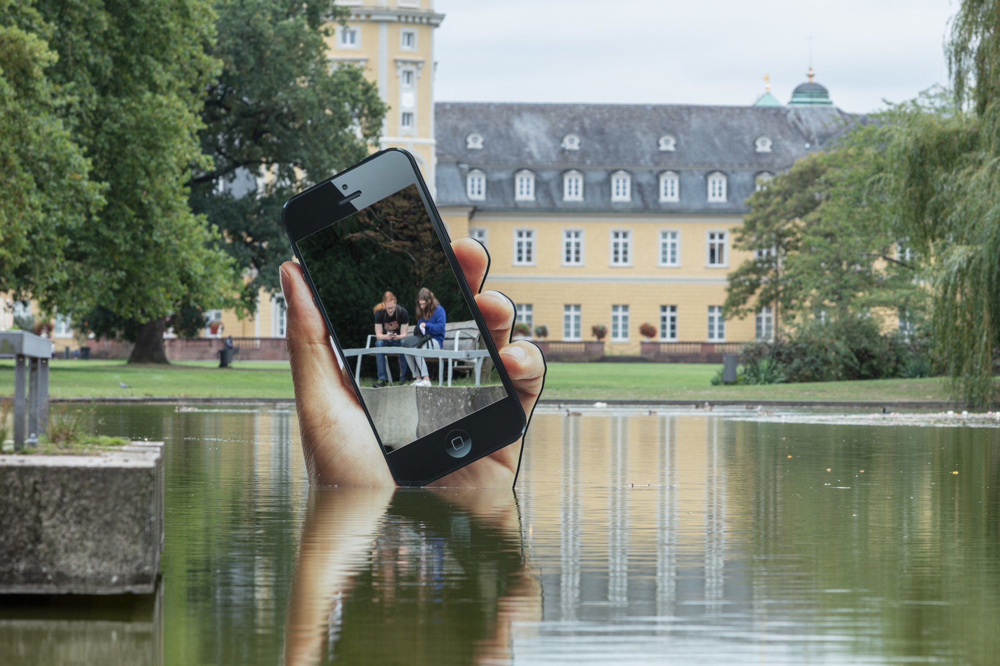

Comment l’engouement technologique vient-il interférer avec nos comportements et les modifier ?
Artiste post numérique et interdisciplinaire, Aram Bartholl  né le 27 décembre 1972 en Allemagne est un acteur majeur de la scène artistique berlinoise. Questionnant les liens entre le monde numérique et physique, il crée des interactions alliant fiction et réalité afin de questionner l’authenticité de notre environnement. Débutant son cursus scolaire à l’Université des Arts de Berlin, il est récompensé en 2001 par le concours Browserday avec sa thèse Bits on Location. Il y développe dans cette dernière une pratique sculpturale mettant en exergue un processus performatif qui questionne notre rapport à la vie privée. Dès l’obtention de son diplôme d’ingénieur en architecture, il confonde en 1996 Freies Fach, groupement d’artistes interrogeant les espaces urbains et notre dépendance au numérique.
Le numérique s’allie à l’urbanisme à la fois dans ses recherches théoriques et dans ses propositions plastiques. Par le recours de la sculpture, de l’installation ainsi que de la mise en scène, Aram Bartholl propose une écriture conceptuelle tout droit inspirée des plus grands médias tel que Youtube afin de nous plonger dans un univers à mi-chemin entre le virtuel et le fictionnel. Inspirée par les mouvements techno-sociaux, l’œuvre de Bartholl pousse le lecteur à se questionner sur sa propre existence. Il n’hésite pas à faire des espaces urbains son terrain de jeux, comme ici avec son projet The perfect Beach  de 2018 proposé lors de la biennale de Thaïland. À l’ère des réseaux sociaux et du FAKE LIFE, son approche s’oriente autour d’une critique sociale imposant au spectateur de reconsidérer ses propres attentes.
Avec cette performance/installation, il convoque les touristes à venir se photographier devant des imprimés de plages emblématiques de Krabi. Cette performance fait référence aux paysages exotiques qui sont pour une grande partie de la population, une destination de voyage par excellence. Transportées le long des côtes, trois estampes conçues comme des arrière-plans de bureaux, illustrent des plages paradisiaques. Travaillées sur Photoshop avec des couleurs excessivement saturées, ces dernières confrontent les visiteurs à la question d’un idéal de vie dans une période ultra-connectée. Est-ce là une plage idéale, la plage par excellence ?
La proximité que propose l'artiste avec ses œuvres permet aux spectateurs une totale immersion, son importance dans la culture du numérique consiste à utiliser l’art comme un média, une vitrine aux questionnements.
We are currently experiencing social media and the internet profoundly as a public space for discussion – in contrast to urban space – even though these platforms are run by private firms, with all the problems this entails.
Mais ainsi, la technologie serait-elle un salut ou au contraire la cause de notre perte ?
Travaillant également sur des scénarios post-apocalyptiques dans lesquels l’humanité aurait survécu à une extinction, où internet et l'électricité sont fournis par le feu, l’artiste propose un ensemble d’oeuvres dit «déchets numériques». Essentielle à notre survie, l’information perdure dans le temps pour laisser un message aux générations futures. Avec Obsolete Presence  A. Bartholl réalise en 2017 une sculpture sur bois représentant une main sortant de l’eau tenant un téléphone en position de prise de photo. Ce projet met en exergue la notion de bidimentionnalité, l’écran est ici un miroir reflétant l’image du spectateur tenant son propre téléphone. Cette installation proposée lors de l’exposition Odyssey tenue en Allemagne, invite les spectateurs à re-concevoir le temps et l’espace, car ici l’oeuvre est submersible, disparaissant progressivement. N’est-elle pas au final le présage d’une fin inévitable ?